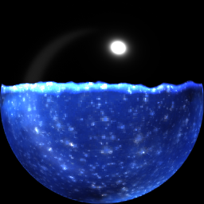

I wrote a blog post about recreating Diablo 3’s resource bubbles (as talked about at https://simonschreibt.de/gat/diablo-3-resource-bubbles/ ). You can find the blog post, with a link to a zipped up working example, at https://www.gamedev.net/blogs/entry/2263632-diablo-3-resource-bubbles/

The linked example includes GLSL shader code to implement the effect. A shader uniform, Level, is specified in the range of 0,1 and determines the level of fluid in the bubble. A scrolling noise texture provides lively surface froth for the top of the fluid. The bubble could be rendered to a texture for actual display on the UI, though the example doesn’t include such functionality. It’s an example of a relatively simple effect that has pretty nice visual impact.
Edit: github repo link: https://github.com/JTippetts/D3ResourceBubbles